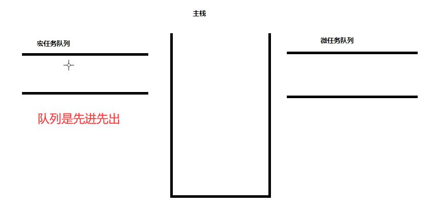
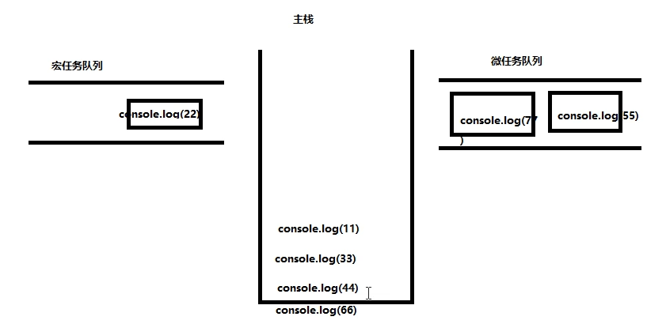
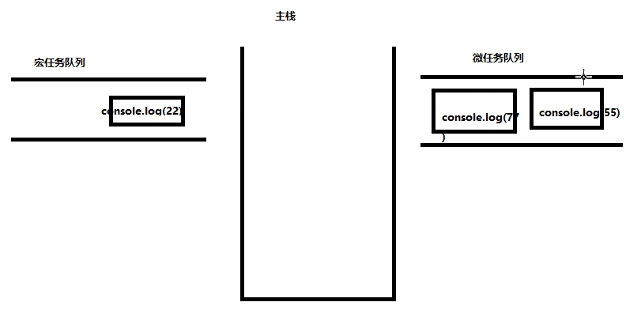
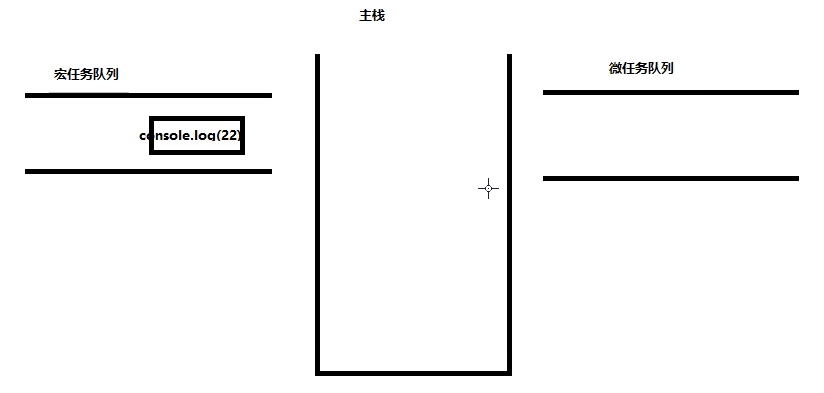
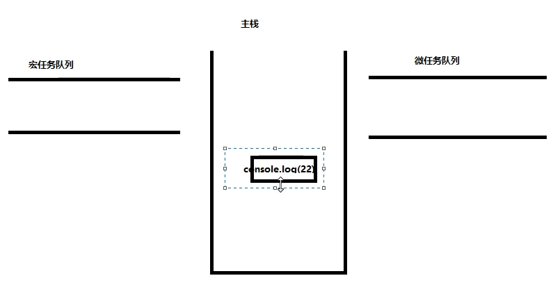
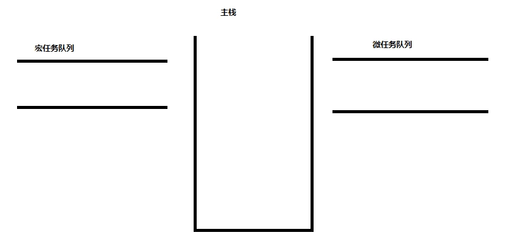

08_js经典输出顺序问题
分析下面代码：
<script>
console.log(11);
setTimeout(function(){
console.log(22);
})
// Promise所入参的函数是立马执行的
new Promise(function(resolve){
console.log(33);
resolve();
console.log(44);
})
// Promise的then是在resolve和reject后执行的
.then(function(){
console.log(55);
})
new Promise(function(resolve){
resolve()
})
.then(function(){
console.log(77);
})
console.log(66);
// 打印顺序是 11 33 44 66 55 77 22
</script>
分析：
整个script代码会先进入主栈，从上向下运行，则先打印11
然后是setTimeout定时器会放在线程里（这里不考虑线程，只需知道线程处理完后都会交给队列），由于定时器没有设置时间，然后会进入宏任务队列。然后是Promise，Promise所入参的函数立马执行，则会打印33，这里有resolve，一resolve这个then会立马执行，Promise的then会进入微任务队列，Promise里还剩下一个44，所以在主栈中打印44。然后还是一个Promise，Promise里没有打印，Promise的then会进入微任务队列，接着打印66。
主栈所有任务执行完毕，主栈清空，主栈清空后，会到任务队列拿任务执行，先把微任务队列的所有任务拿到主栈执行，根据队列的先进先出原则，会先拿微任务队列的55到主栈，55执行完毕，主栈清空，接着拿微任务队列的77,77执行完毕，主栈清空。
  然后去宏任务队列拿任务22到主栈，22执行完毕，主栈清空，所有任务执行完毕。
总结：默认情况下，script整个代码块会入主栈执行，当遇到setTimeout，setInterval等代码块的时候会入宏任务队列，当遇到process.nextTick，Promise.then的时候会入微任务队列，当主栈执行完整个script代码块的时候，会先从微任务队列把所有的微任务放到主栈执行（遵循先进先出原则），当微任务队列的所有任务清空后，再从宏任务队列拿一个任务到主栈执行，然后依次反复。
本作品采用 知识共享署名-非商业性使用-禁止演绎 4.0 国际许可协议 进行许可。